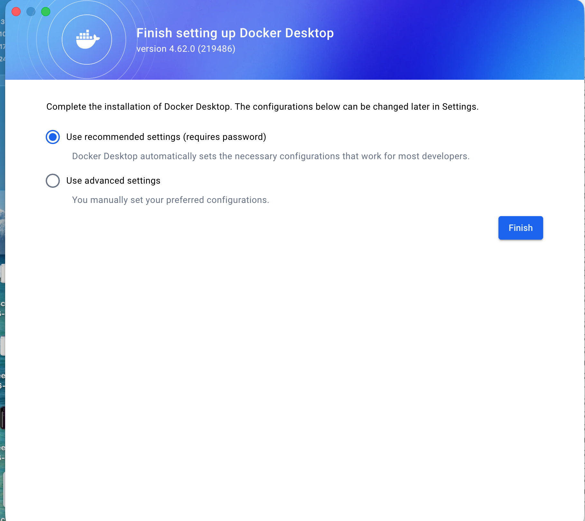
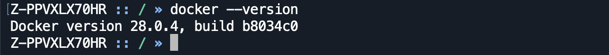
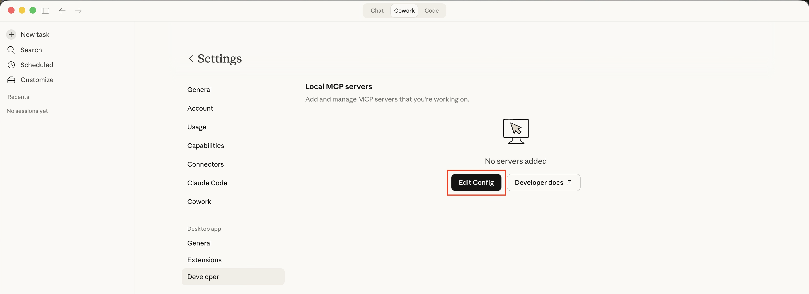
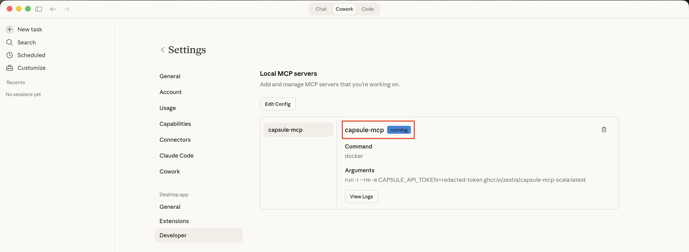
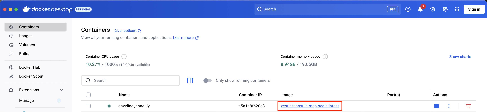

Capsule MCP Server
MCP server that connects to your Capsule CRM data. You can get started with the server and use it with your favourite AI assistant.
Follow the instructions below to get started.
Prerequisites
You will need an AI assistant installed that supports local MCP servers. Some popular options:
- Claude Desktop - Anthropic’s desktop app
- Cursor - AI code editor
1. Install Docker
The Capsule MCP Server runs inside Docker. Docker is a free tool that packages software code along with all its necessary settings and dependencies into a single, portable “container”. It is not owned or associated with Capsule but is necessary to run the Capsule MCP server on your computer.
Option 1: Docker Desktop (recommended for most users)
- Go to https://www.docker.com/products/docker-desktop
- Click Download Docker Desktop, selecting your Operating System
- Run the installer and follow the prompts
- If prompted for configuration settings, select Use recommended settings:

- Restart your computer if prompted
- Launch Docker Desktop
Option 2: CLI only (for developers)
Follow the official installation guide for your specific distribution.
2. Verify your Docker installation
Once Docker is installed and the Docker app is open, confirm the installation by opening the Terminal app (macOS) or Command Prompt (Windows) and entering:
docker --version
It should print a version number, similar to below:

3. Locate your AI assistant config file
Locate the configuration file for your chosen AI assistant:
Claude Desktop
- Open Claude Desktop
- Open the
Settingsmenu:- macOS -
Claude→Settings - Windows -
File→Settings
- macOS -
- Select
Developer, and underLocal MCP ServersselectEdit Config
- This will open a Finder/File Explorer window with the
claude_desktop_config.jsonfile selected - Open the file:
- macOS - Right-click and
Open with→TextEdit - Windows - Right-click and
Open with→Notepad
- macOS - Right-click and
Cursor
See configuration locations to locate the config file.
4. Copy MCP server config
- Exit your AI Assistant app (Claude, Cursor, etc.) - this is to prevent any issues while editing and saving the file
- Copy and paste the following into the file (do not save at this point):
{
"mcpServers": {
"capsule-mcp": {
"command": "docker",
"args": [
"run",
"-i",
"--rm",
"-e",
"CAPSULE_API_TOKEN=your-api-token",
"ghcr.io/zestia/capsule-mcp-scala:latest"
]
}
}
}
5. Generate an API key
- In your Capsule account, navigate to:
My Preferences→API Authentication Tokens→Generate New API Token- Description: Capsule MCP Server
- Scope of this token: Select
Read information from your Capsule accountonly
- Copy the generated token
- In your open
claude_desktop_config.jsonfile, replaceyour-api-tokenwith the copied token. Do not delete theCAPSULE_API_TOKEN=prefix. - Save the file
6. Test the connection
Each time you wish to use your MCP server, you should launch Docker and ensure it is running before opening your AI Assistant (Claude, Cursor, etc.). The Docker app must be running for the MCP server to start and run.
- Launch your AI assistant
- You should now see a new
capsule-mcpserver running in the list of available MCP servers in Settings. For example, in Claude Desktop:
- You should also see a “container” running in the Docker app:

- Try asking a basic question about your Capsule account to test the connection, for example:
How many contacts do I have in Capsule? - If you are having any issues or seeing errors, please refer to the troubleshooting guide.